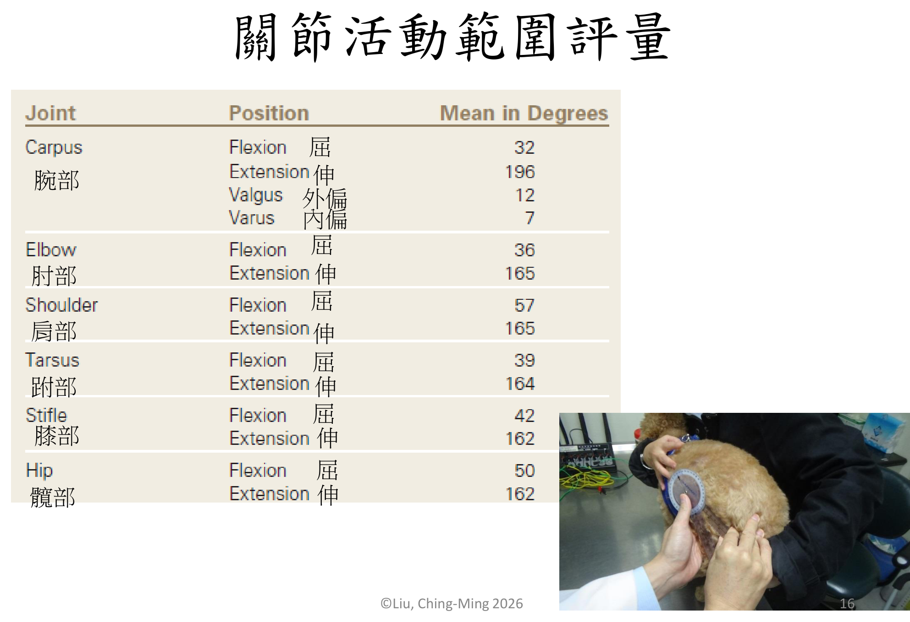
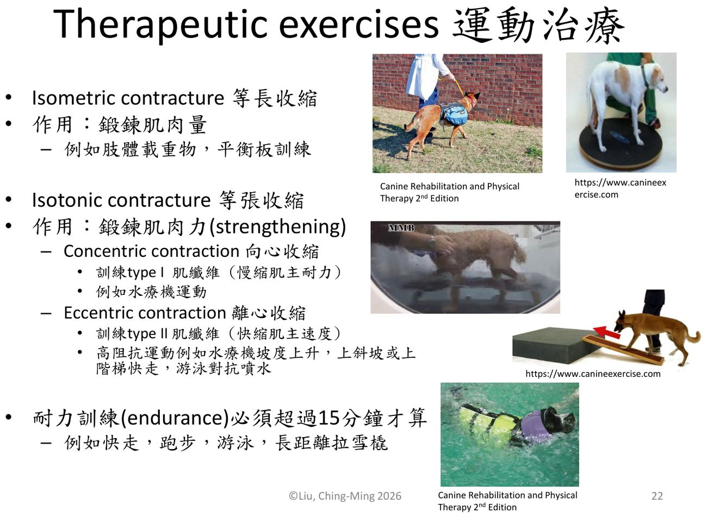
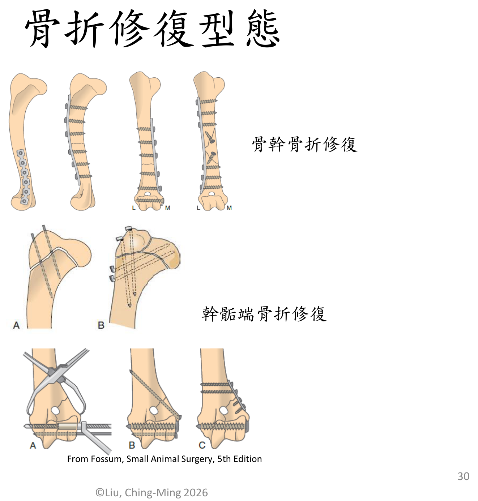
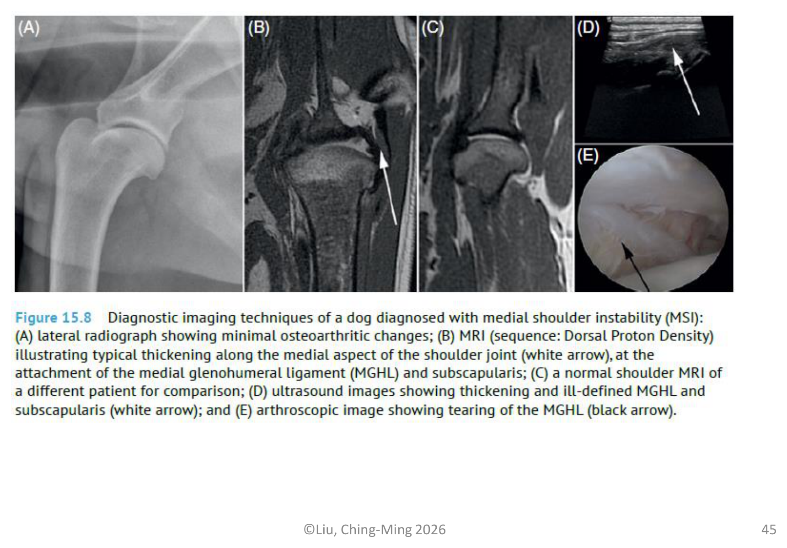
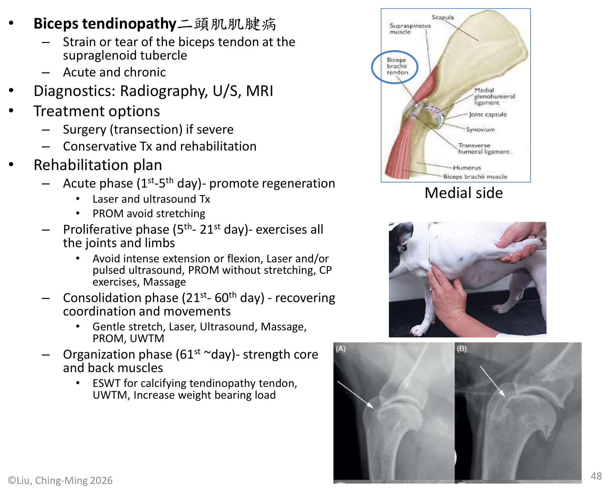
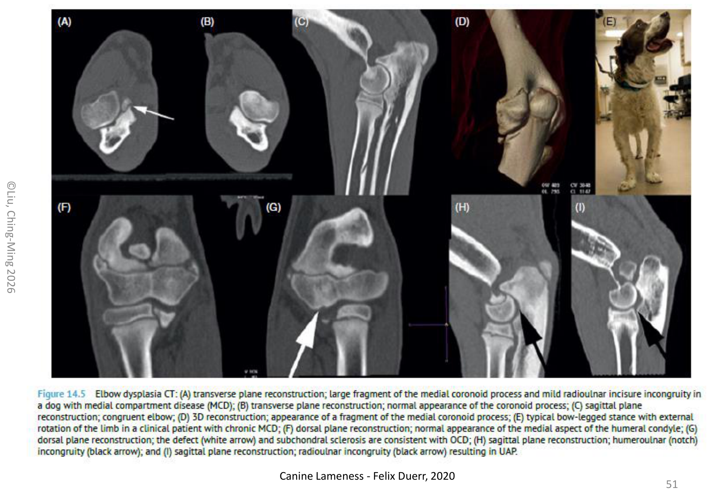
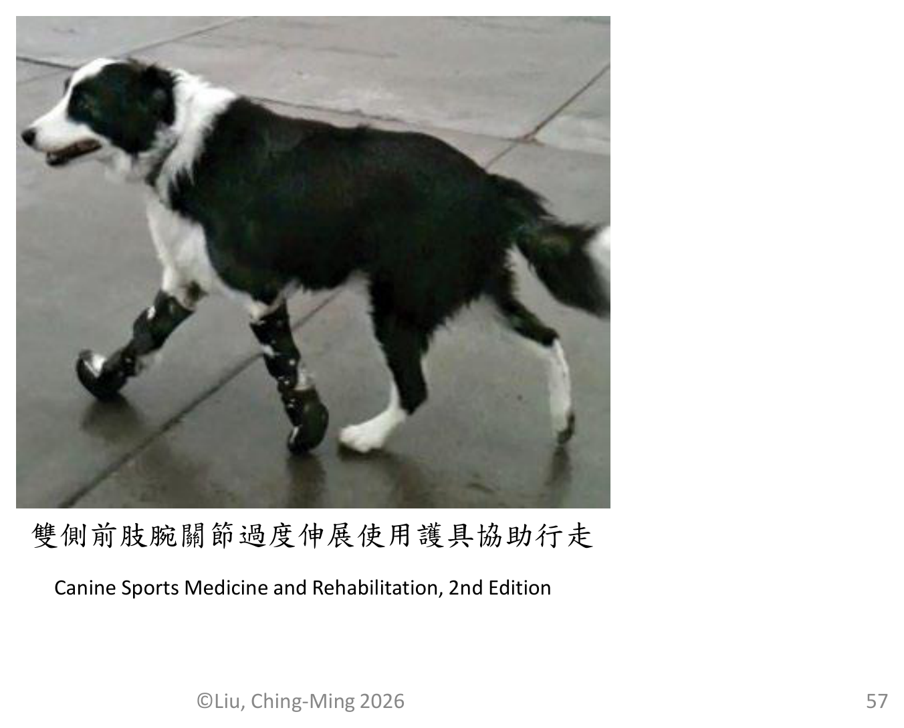
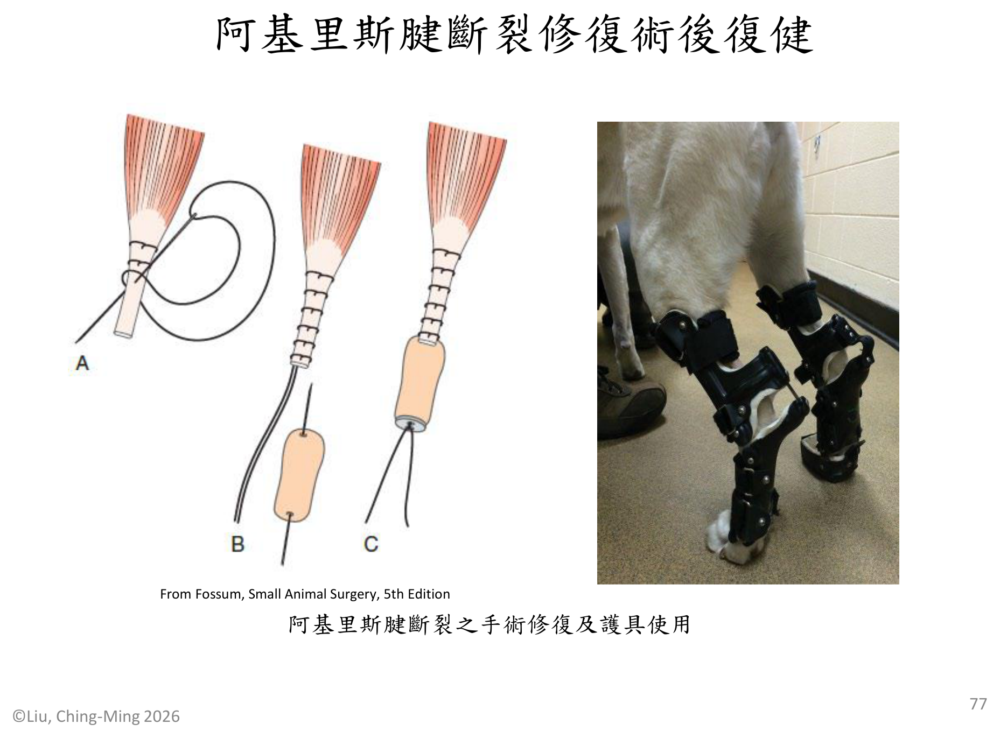
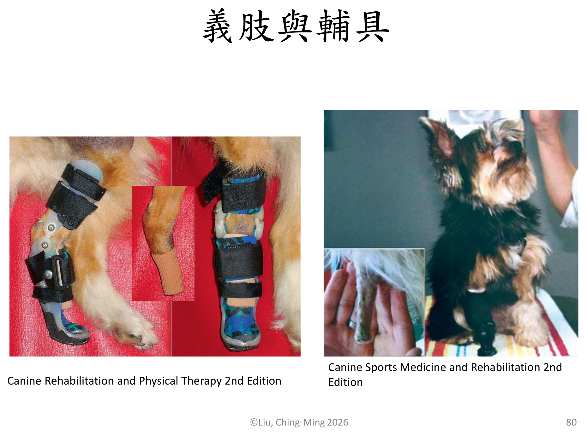

重點摘要
這份講義的架構跟上一份神經科疾病復健講義完全平行——一樣分「總論 General」與「各論 Individual」，一樣套用同一套急性期（1-5天）→增生期（5-21天）→鞏固期（21-60天）→組織期（61天以後）四階段復健框架。差別在於這份講義處理的是骨科：總論先講疼痛評估量表、各種物理治療儀器（冰熱敷、針灸、雷射、TENS、超音波）的原理與用法，再講關節活動、肌肉萎縮、本體感覺、核心肌群這幾個復健的共同目標；各論則先建立骨折修復的復健原則，再依「前肢」「後肢」逐一整理十幾種常見關節、肌肉、韌帶、肌腱疾病的診斷與分期復健方案，最後是截肢術後復健與義肢輔具。
由於幾乎每個疾病都套用同一套四階段框架，只是每階段放入的具體治療項目不同，這頁把共同的框架抽出來獨立整理（骨折修復章節），各論每個疾病則聚焦在「跟框架不一樣、需要特別注意」的地方，並保留幾個講義中最完整的日/週治療時間表當作範例，不會逐一列出十幾張幾乎重複的表格。
評估量表＋7種物理治療模式
四階段框架的完整範例
7種肩肘腕關節與肌腱疾病
6種髖膝跗關節與韌帶疾病
- 四階段復健框架是這份講義（也是整個復健科）的核心邏輯：急性期以疼痛控制與消腫為主、盡量避免主動運動；增生期開始活動所有關節與肢體但避免過度伸展；鞏固期恢復協調性與動作模式；組織期則著重核心與背部肌力強化。幾乎每個骨科疾病的復健方案都是把這套框架套在該疾病的解剖部位上。
- 骨折病患復健的「三不一要」最容易被忽略：初期勿過度操作（防止植入物鬆脫）、勿過度關籠（避免延遲癒合、關節攣縮、肌肉萎縮）、傷口未癒合勿水療浸水（防感染），要盡量使用拉帶／胸拉等輔具協助行走。
- 跛足評估量表（0-5級）與疼痛評估量表是骨科復健的共同語言：0分正常步態，5分完全無法負重；這與神經科疾病復健用的癱瘓分級系統是平行但不同的兩套分級工具，臨床上不要混用。
- 前十字韌帶斷裂（CCL rupture）是小動物骨科最常見的疾病之一，臨床特徵是後肢跛足合併屈膝內轉（stifle hyperextension and internal rotation）、抽屜試驗（drawer test）陽性，手術選項多（囊外法、TPLO、TTA、CBLO），復健重點是避免過度伸展與旋轉膝關節。
- 髖關節發育不良的復健方案依手術方式（FHNO vs. THR）明顯不同：股骨頭頸切除術（FHNO）後可以較積極介入髖關節伸展運動；全髖關節置換（THR）術後則需嚴格控制走動與姿勢、避免內收外展以防脫臼，是這份講義中少數「手術方式不同、復健策略方向也不同」的例子。
疼痛評估與物理治療模式 Pain Assessment & Physical Modalities
骨科復健的第一步永遠是評估——先量化疼痛與跛足程度，才能判斷治療是否有效；接著才是講義列出的七種物理治療工具，各有各的原理與適應時機。
疼痛與跛足評估量表必考 學長姐整理
常用 VAS（visual analogue scale，疼痛視覺模擬量表）與 Colorado Canine Acute Pain Scale，依行為表現、對碰觸的反應、身體緊張度分級，從「休息時安心舒適」到「碰觸痛處反應激烈攻擊人、身體僵硬盡量避免疼痛活動」共分多個等級，中至重度疼痛需再評估止痛計畫。
| 0 | 正常步態 |
| 1 | 輕度間歇式跛足（偶而） |
| 2 | 中度跛足，正常步距，部分負重（足負重，跛足明顯） |
| 3 | 中度跛足，步距變短，部分負重（足負重，跛足嚴重） |
| 4 | 嚴重跛足，腳趾點地，肢體少用（足偶而抬起） |
| 5 | 跛足無法負重（足抬起） |
記法（補充）：2 與 3 的差別在「步距」（正常 vs 變短）；4 是腳趾點地、5 是完全不著地。學長姐整理第 1 頁也列了這張 0–5 級表（括號中的「足負重，跛足明顯」等是講義 p.6 的中文補述）。
骨科術後常用止痛劑必考
| 分類 | 藥物（p.8） | 常用給藥途徑（補充） |
|---|---|---|
| NSAIDs 非類固醇消炎劑 | Carprofen（Novox® / Rimadyl® 猛力） | PO；注射劑型 SC |
| Deracoxib（Deramaxx®） | PO | |
| Firocoxib（Previcox® 骨克疼） | PO | |
| Meloxicam | PO；注射劑型 SC／IV | |
| Gabapentin | 神經痛阻斷劑 | PO |
補充：講義只列藥名，沒有寫途徑與劑量；途徑欄是整理者依常用劑型補的，劑量依醫囑（講義各術後表寫「As directed 遵照醫囑」）。NSAIDs 的機轉與比較見第 7 週〈慢性疼痛管理〉。
七種物理治療模式 Physical Modalities必考
講義 p.7 列出每種方法的用途：止痛劑（止痛、消炎）、冰敷（消腫、止痛）、熱敷（促進癒合、止痛、消腫）、針灸（止痛、促進組織修復）、雷射（止痛、促進癒合與組織修復、消腫）、TENS（止痛）、治療超音波（促進組織修復、深層熱敷）。
| 模式 | 原理 | 使用重點 |
|---|---|---|
| 冰敷 Cryotherapy | 血管收縮、降低血流量、減少腫脹與組織繼續分解 | 創傷後立即使用最有效，持續 24–72 小時直到組織進入增生期；每天 3–4 次、每次 15–20 分鐘；局部淺層約 1–4 公分深；避免凍傷、需隔絕保護（p.9） |
| 熱敷 Thermal Therapy | 血管擴張、增加血液循環、放鬆肌肉、增加軟組織伸展性 | 組織達增生期及重建期使用（創傷後 72 小時）；每天 3–4 次、每次 15–30 分鐘；局部淺層約 1–5 公分深；預計增溫 2–4°C；避免超過 45°C 燙傷、需隔絕保護（p.9） |
| 針灸 Acupuncture | 疼痛控制門戶理論、腦內啡釋放、穴道與經絡 | 局部穴位、平衡穴位；方式有乾針、電針 |
| 雷射 Laser | 提供細胞粒線體能量、促進癒合與組織修復 | 點對點或掃面積方式，以總能量（焦耳）計算劑量 |
| TENS 經皮神經電刺激 | 疼痛控制門戶理論、特定頻率電流刺激釋放腦內啡 | 急性痛用高頻（50-150Hz）、慢性痛用低頻（<50Hz）；另有干擾波（IFC）、調製波（premod） |
| 治療超音波 Therapeutic Ultrasound | 細胞按摩、深層熱敷、促進組織修復 | 脈衝式（pulsed）或連續式（continuous）；1.0MHz穿透較深、3.3MHz較淺層 |
| NMES 神經肌肉電刺激 | 電流刺激肌肉收縮，對抗肌肉萎縮 | 伸肌與屈肌可交替刺激或同時伸屈，詳見下節肌肉萎縮復健 |
急性發炎期應避免使用 TENS；冰敷與熱敷的分界點大致是「創傷後72小時」——之前用冰敷消腫止痛，之後改熱敷促進循環與癒合，這個時間軸在後面每個疾病的分期治療表中都會重複出現。
關節、肌肉、本體感覺與核心復健 Joint, Muscle, Proprioception & Core
這節是骨科復健的四大共同目標，之後每個疾病的復健方案，本質上都是從這四塊裡挑選合適的項目組合而成。
關節活動復健理解
PROM（passive range of motion，被動式關節活動）與 AROM（active range of motion，主動式關節活動）是最基礎的兩種方式，進階則有運動復健（therapeutic exercises）如坐與站（sit to stand）、橫桿跨越（cavaletti rails）、挖掘（digging），以及UWTM（underwater treadmill，水中跑步機）。

關節囊膜（joint capsule）外層為纖維組織負責力學穩固，內層含血管叢，A型滑液膜細胞具吞噬作用、B型滑液膜細胞分泌玻尿酸潤滑；關節囊有兩種本體感受體：Ruffini Endings（感知關節動作）與 Pacinian Corpuscles（感知關節體位及動作）（p.17 中文原文；第 2 週講義第 39 頁英文版是 Ruffini＝位置＋動作、Pacini＝動作，兩者對調，見第 2 週），疼痛感受體為 Free Nerve Endings，韌帶上的本體感受體則是 Golgi Tendon Organs。
肌肉萎縮復健必考
原理：促進血液與淋巴循環、刺激肌肉活性。四種手法：Effleurage（輕撫法，平行肌肉纖維向心輕撫）、Petrissage（揉捏法，垂直肌肉纖維揉捏）、Tapotement（扣撫法，敲擊刺激肌肉）、Cross-friction（交錯摩擦法）。
電流刺激肌肉收縮，方式可為伸肌與屈肌交替，或同時伸屈；常用於術後早期肌肉尚無法主動收縮時維持肌肉量。
運動治療 Therapeutic Exercises依收縮型態分兩類：等長收縮（isometric contracture）鍛鍊肌肉量（如肢體載重物、平衡板訓練）；等張收縮（isotonic contracture）鍛鍊肌力，再分向心收縮（concentric，訓練type I慢縮肌主耐力，如水療機運動）與離心收縮（eccentric，訓練type II快縮肌主速度，如水療機坡度上升、上斜坡、游泳對抗噴水）。耐力訓練（endurance）須持續超過 15 分鐘才算（p.22，學長姐整理亦列），例如快走、跑步、游泳、長距離拉雪橇。UWTM水療的原理是浮力、阻力、表面張力，浸水深度不同承重比例也不同（約38%-91% BW）。

本講義 p.22 把「水療機坡度上升、上斜坡或上階梯快走」列為離心收縮（高阻抗）的例子；學長姐整理與第 2 週講義的定義（離心＝肌纖維被拉長以控制動作）則寫「下坡路能練離心」。依生理學定義，下坡時後肢肌群主要做離心收縮、上坡主要是向心收縮（補充）。考試若問例子，建議依題目給的講義版本作答，並注意這個差異。另外本講義把向心對應 type I（慢縮、耐力）、離心對應 type II（快縮、速度）。
| UWTM 水位（p.23） | 承受體重 | 浮力（學長姐整理） |
|---|---|---|
| 跗關節（hock） | 91% BW | 9% |
| 膝關節（stifle） | 85% BW | 15% |
| 髖關節（hip）／大轉子 | 38% BW | 62% |
講義 p.23 圖只標 85%、91%、38% BW 三個數字；學長姐整理寫「Hock 9%、Stifle 15%、Hip 62% 浮力」，兩者相加剛好 100%，是同一組數字的兩種寫法。記法：水越深、浮力越大、承重越少；水到髖部只剩約 4 成體重。
本體感覺復健理解
透過運動復健（平衡訓練：平衡板、重心偏移）與教育神經（掐腳趾回縮反射、跨越橫桿）兩條路徑，重新建立肢體的位置覺與動作協調。
核心肌群鍛鍊理解
以伸展（stretching）類運動治療為主：球上棒式訓練（plank on ball）、由坐到站（sit to stand）、拉弓姿勢（play bow or praying）、對角平衡（lifting diagonal limbs）、不穩平面訓練（unstable surface）。
骨折修復復健 Fracture Repair Rehabilitation重要
講義從這節開始進入「各論」。骨折修復的復健方案是整份講義中示範最完整的一套四階段時間表，之後每個疾病的表格基本上都是同一個模板的變化版，所以這節值得花時間扎實理解。
復健計畫決定因素理解
復健計畫隨以下因素決定：骨折部位（關節近端或遠端，proximal or distal to joints）、骨折型態（粉碎性或單純，comminuted or simple fracture）、復位方式（骨髓釘或骨板系統 IM pinning/bone plate and screw、外固定支架 ESF external fixation system）。

- 骨折癒合初期勿過度操作，以防植入物鬆脫導致手術失敗
- 骨折手術後勿過度關籠休養，以免引起骨折延遲癒合、關節活動角度變小、肌肉萎縮、肌肉攣縮
- 傷口未癒合時勿水療浸水，以防止感染
- 盡量使用拉帶、胸拉或其他輔具協助行走以維安全
- 前4週限制性主動運動，每日2次各15分鐘
骨幹骨折手術後復健時間表（完整範例）必考
以下是講義給出最完整的一份逐週治療表，可以看出四階段框架在實務上如何落地成具體的每日/每週處置頻率：
| 治療 | 第1-7天 | 第7-21天 | 第3-12週 |
|---|---|---|---|
| 止痛藥 | 遵照醫囑 | 視需要 | |
| 冰敷 Cold pack | 每日3回每回10-15分鐘 | 運動後冰敷15分鐘 | 視需要 |
| 熱敷 Hot pack | 運動前熱敷10分鐘 | 視需要 | |
| 針灸 Acupuncture | 每2日1次 | 每週2次 | — |
| TENS | 每日1-2次 | 每週2-3次 | — |
| 按摩 Massage | 每日3回每回5分鐘 | 每日2回每回5分鐘 | 視需要（第3-4週每日2回每回5分鐘） |
| PROM | 每日3回每回10次 | 每日2回每回5分鐘 | — |
| 雷射 Laser | 每日1次或每2日1次 | 每2日1次逐漸每週2次 | 每週2次 |
| 協助行走 | 每日2-3回每回5分鐘 | 每週增加2-3分鐘 | 每週增加5分鐘，第8-12週每日2-3回每回15-20分鐘 |
| NMES | 每日2回每回10分鐘 | 每日2回每回10分鐘 | — |
| 平衡練習 | 每日2回每回5分鐘 | 每日2回每回5分鐘 | 單腳站立每日2回每回5分鐘 |
| 橫桿跨越／坐站練習 | 每日2回每回5分鐘 | 每日2回每回5分鐘 | 每日2回每回5分鐘 |
| UWTM 水中跑步 | — | 拆線後每週3回每回10分鐘 | 第5-7週每週2回每回15-20分鐘，第8-12週每週2回每回15-30分鐘 |
| 緩上坡 Hills | — | — | 第3-4週曲折緩坡5分鐘，逐漸增加至10分鐘 |
| 游泳 Swimming | — | — | 骨折癒合後可5-10分鐘 |
Modified from Fossum, Small Animal Surgery, 5th Edition
※ 上表未列的項目：穿梭練習（weaving）第 1–21 天每日 1 回每回 2–3 分鐘，第 3–12 週每日 2 回每回 5 分鐘（p.31–32）。原表請看下方截圖。
股骨遠端幹骺端骨折術後復健理解
結構與骨幹骨折相同，但有幾個膝關節專屬的重點（p.33–34）：
- 按摩：消除水腫要由腳趾向心臟按摩；之後在主動運動前／中按摩股四頭肌。
- PROM：每日 3–4 回、每回 10 次，掐腳趾回縮反射，膝關節屈曲很重要；第 7–21 天以回縮反射做「踩腳踏車」動作訓練膝伸屈，持續到第 4 週。
- 行走：第 5 天開始牽繩行走（每日 2 回每回 5 分鐘），鼓勵膝關節主動運動；第 8–12 週每日 2 回每回 20–30 分鐘，其中 10 分鐘上坡。
- UWTM：拆線後每日 1 回每回 10–15 分鐘。
- 階梯：術後 6 週先 1 階，之後每週加 1 階，增加到 5 階、每天 2 回。
- 第 8–12 週：雪地、沙地或高草地行走，增加膝蓋屈曲；跨 5 枝橫桿 10–15 次每日 2 回。
前肢關節、肌肉與肌腱疾病 Forelimb Conditions重要
講義列出 7 種前肢疾病（p.42）並另附肱骨髁骨化不全（p.54），每個都寫「病因／機轉 → 診斷 → 治療選項 → 四階段復健計畫」。先看總覽表，再看四階段方案總表與術後時間表。
前肢疾病總覽必考
| 疾病 | 機轉／特徵 | 診斷 | 治療與復健重點 |
|---|---|---|---|
| 肩胛骨脫臼 Scapular Luxation |
腹鋸肌（serratus ventralis）斷裂 | X光 | 手術＋復健；急性期用 Velpeau sling 固定；增生期移除吊帶後避免外展／內收 |
| 內側肩關節不穩定 MSI (Medial Shoulder Instability) |
肩關節半脫位；正常外展角度約33°；涉及MGL（內側盂肱韌帶）、SST（肩胛下肌腱）；分Grade I-IV | MRI、關節鏡 | 手術或保守治療（穿戴 hobble vest）；全程避免外展／內收動作 |
| 棘上肌肌腱病 Supraspinous Tendinopathy |
過度使用與慢性重複創傷，疼痛與跛足 | X光、超音波、MRI | 已鈣化才手術，否則保守治療＋復健；全程以雷射／脈衝超音波為主，組織期加ESWT處理鈣化肌腱病 |
| 棘下肌攣縮 Infraspinous Contracture |
纖維化縮短，特徵性步態異常 | 步態評估、理學檢查、超音波、MRI | 手術＋復健；急性期即開始雷射與超音波治療，增生期加入UWTM |
| 二頭肌肌腱病 Biceps Tendinopathy |
肱二頭肌肌腱於supraglenoid tubercle處拉傷或撕裂，分急性慢性 | X光、超音波、MRI | 嚴重者手術（tenotomy）；復健全程避免伸展動作（avoid stretching）直到鞏固期才可溫和伸展 |
| 肘關節發育不良 Elbow Dysplasia |
MCD（內側腔室症候群）、RUI（橈尺骨不對稱）、內側冠狀突碎裂（Fragmented Medial Coronoid Process, FMCP）／肘突未癒合（Ununited Anconeal Process, UAP）／剝脫性骨軟骨炎（Osteochondritis Dissecans, OCD），終將導致骨關節炎（Osteoarthritis, OA） | X光、關節鏡、CT | 手術或關節鏡移除碎片，或保守治療；鞏固期才開始強度較大的伸屈動作（如下階梯） |
| 肱骨髁骨化不全／肱骨內髁間裂 Incomplete Ossification of Humeral Condyle (IOHC)／Humeral Intracondylar Fissure (HIF) |
IOHC：骨化應在生長前 3 個月完成，見於骨骼未成熟的年輕犬（約 4 月齡）；HIF：進行性裂隙造成應力性骨折，成犬 3–4 歲，急性 | X光、CT | 手術；復健方案與肘關節發育不良相同（p.54） |
| 腕關節過度伸展 Carpal Hyperextension |
腕關節掌側韌帶完全斷裂 | 應力X光（stress radiographs） | 手術（關節固定術 arthrodesis）或保守治療；UWTM需維持在肩部水位高度 |
本講義 p.44：「33° is considered a normal abduction angle」；第 2 週講義第 50 頁：正常犬肩外展角度中位數「約 45°」。兩份都是劉金鳴老師的講義，考試遇到時依題目情境作答，並可註明兩個數字都出現過；建議向老師確認。
前肢各疾病四階段方案總表（講義原文）必考
| 疾病 | 急性期 1–5 天 | 增生期 5–21 天 | 鞏固期 21–60 天 | 組織期 61 天～ |
|---|---|---|---|---|
| 肩胛骨脫臼（p.43） | 疼痛管理、按摩、PROM、Velpeau sling | 移除吊帶、按摩、PROM、防跌倒、早期負重、避免外展內收 | 按摩、PROM、防跌倒、早期負重、避免外展內收 | 穿梭桿（weave poles）、彈力帶（Theraband）強化 |
| MSI（p.44） | 術後疼痛管理、按摩、PROM、hobble vest | 移除 hobble vest（術後）、按摩、PROM、簡單 CP、避免外展內收 | 按摩、PROM、溫和伸展、UWTM 及／或陸上跑步機、早期負重、避免外展內收、穿梭桿 | 穿梭桿、彈力帶強化 |
| 棘上肌腱病（p.46） | 疼痛管理、雷射及／或脈衝超音波 | 雷射／脈衝超音波、按摩、PROM | 雷射／脈衝超音波、按摩、PROM、溫和伸展 | 負重、ESWT 處理鈣化性肌腱病、UWTM |
| 棘下肌攣縮（p.47） | 術後疼痛與腫脹處理、PROM、慢走、重心偏移、雷射與超音波 | 雷射／脈衝超音波、按摩、PROM、伸展、UWTM | 超音波、按摩、PROM、伸展、負重 | 增加負重 |
| 二頭肌腱病（p.48） | 雷射與超音波、PROM 避免伸展 | 避免劇烈伸展或屈曲、雷射／脈衝超音波、PROM 不伸展、CP、按摩 | 溫和伸展、雷射、超音波、按摩、PROM、UWTM | ESWT（鈣化性）、UWTM、增加負重 |
| 肘關節發育不良（p.50） | 術後疼痛與腫脹、PROM、避免主動運動、按摩 | UWTM、避免劇烈伸屈、PROM、按摩 | 負重、按摩、AROM（跨橫桿）、劇烈伸屈如下階梯 | 增加負重 |
| IOHC／HIF（p.54） | （同肘關節發育不良） | （同上） | （同上） | （同上） |
| 腕關節過度伸展（p.56） | 術後疼痛與腫脹處理 | 按摩、重心偏移、慢走、趾頭 PROM | UWTM 水位到肩、CP exercises | 增加負重 |
名詞（補充）：Velpeau sling＝把前肢屈曲貼在胸壁固定的吊帶；hobble vest＝限制前肢外展的背心；Theraband＝彈力帶；ESWT＝體外震波（第 6 週）。
前肢術後逐週復健表
| 表（頁碼） | 關鍵重點 |
|---|---|
| 肌腱韌帶修復術後（p.49） | 按摩勿直接按痛處、淺層即可；PROM 盡量勿繃緊患處韌帶；超音波：急性期用間斷波（脈衝），慢性期用連續波，每週 3–4 次；ESWT 急性發炎期勿用，每 2 週 1 次；TENS 急性發炎期勿用 |
| 肘發育不全關節鏡術後（p.52–53） | 以胸背帶協助外出上廁所；第 4–14 天每日 2 回 10–15 次肘伸屈；UWTM 第 2–4 週每日 5–10 分鐘，第 3–8 週加重物或浮具；第 3–8 週握手（shaking paw）、挖地、跨 5 枝低橫桿；游泳輔以浮具 |
| 關節過度伸展關節固定術後（p.58） | PROM 避免過度屈曲患處關節；行走、重心偏移、坐站都必須等骨頭癒合後；UWTM 剛開始緩和，可逐漸增加向上坡度 |




前肢疾病中有兩個「避免伸展」的例外要特別記住：二頭肌肌腱病全程避免伸展（伸展會拉扯剛修復或發炎的肌腱），MSI則是全程避免外展／內收（外展會拉扯內側肩關節穩定結構）——這兩個「動作禁忌」是這節除了四階段框架以外，最容易被考的細節。
後肢關節、肌肉與韌帶疾病 Hindlimb Conditions重要
講義列出 6 種後肢疾病（p.42），前十字韌帶斷裂與髖關節發育不良著墨最多，各附 2–4 張逐週術後表。
後肢疾病總覽必考
| 疾病 | 機轉／特徵 | 診斷 | 治療與復健重點 |
|---|---|---|---|
| 髂腰肌扭傷 Iliopsoas Muscles Sprain |
急性或慢性，跛足合併髂腰肌疼痛 | 超音波、MRI | 保守治療＋復健；組織期加入伸展與跳舞（dancing）式訓練強化核心 |
| 髖關節發育不良 Hip Dysplasia |
遺傳性因素，半脫位（subluxation） | X光 | 手術（FHNO股骨頭頸切除術 或 THR全髖關節置換）或復健；FHNO術後可積極做髖關節伸展運動，THR術後則需嚴格控制走動姿勢、避免內收外展、防止跌倒以防脫臼——兩種術式復健方向明顯不同 |
| 股薄肌／半腱肌半膜肌纖維化肌病 | 好發德國牧羊犬；肌肉攣縮；擺盪期跗關節側向抽動、膝關節內轉；肌肉纖維化後通常不痛 | 理學檢查 | 手術（肌切開術／肌腱切開術）但2.5個月後常復發；纖維化形成前可用PRP注射或ESWT保守治療 |
| 前十字韌帶斷裂 CCL Rupture重要 |
創傷性或退化性；膝關節過度伸展合併內轉；抽屜試驗（drawer test）陽性 | 理學檢查、X光、關節鏡 | 手術（囊外法 Extracapsular、TPLO、TTA、CBLO）或保守治療；復健全程避免膝關節過度伸展與旋轉 |
| 膝蓋骨異位 Patellar Luxation |
分Grade 1-4；小型犬多為內側（MPL），大型犬多為外側（LPL） | 理學檢查、X光、CT | 手術＋復健或保守治療；增生期即可開始彈跳（bouncing）與牽繩行走 |
| 總跟腱（阿基里斯腱）斷裂 | 蹠行姿勢（plantigrade hock）；部分斷裂呈蟹爪狀（crab claw, Type IIc），完全斷裂呈扁平足站姿 | 理學檢查、超音波 | 手術＋客製化鉸鏈式跗關節護具（hinged tarsal orthosis）固定，或PRP注射、保守治療；鞏固期每3週增加5°屈曲角度，護具需配戴至少20週 |

後肢各疾病四階段方案總表（講義原文）必考
| 疾病 | 急性期 1–5 天 | 增生期 5–21 天 | 鞏固期 21–60 天 | 組織期 61 天～ |
|---|---|---|---|---|
| 髂腰肌扭傷（p.59） | 雷射與 PW 超音波、PROM、按摩 | 雷射／脈衝超音波、按摩、PROM | 雷射／脈衝超音波、按摩、PROM、伸展、UWTM | 增加負重、伸展、跳舞（dancing） |
| 髖關節發育不良：FHNO 術後（p.61） | 疼痛腫脹、PROM、按摩、重心偏移、慢走 | 雷射／超音波、AROM、髖伸展、坐站、按摩、UWTM | 髖伸展、伸展運動 | 增加負重 |
| 髖關節發育不良：THR 術後（p.61） | 疼痛腫脹、PROM、按摩、sling walk、避免外展內收、防跌倒 | 控制下行走與站立、平衡與 CP | 控制下的動作、CP | 增加負重 |
| 前十字韌帶斷裂：術後（p.68） | 疼痛腫脹、PROM 避免伸展、按摩、簡單 CP | 疼痛腫脹、PROM 避免伸展、避免劇烈屈曲、按摩、牽繩行走、控制下 UWTM（高水位） | PROM、避免劇烈屈曲、按摩、控制下 UWTM | 增加負重 |
| 前十字韌帶斷裂：保守（p.68） | 疼痛腫脹、PROM、按摩、sling walk、避免外展內收、防跌倒 | PROM、重心偏移、避免劇烈伸展、UWTM | PROM、避免跳躍與激烈玩耍、避免膝劇烈伸展與旋轉 | 增加負重 |
| 膝蓋骨異位（p.73） | 術後疼痛腫脹、按摩、簡單 CP | PROM、按摩、重心偏移、彈跳（bouncing）、牽繩行走 | 重心偏移、UWTM | 增加負重、平衡與 CP |
| 總跟腱斷裂（p.76） | 術後疼痛腫脹、PROM、按摩、雷射、超音波 | PROM、按摩、雷射、超音波、重心偏移 | 鉸鏈式護具每 3 週增加 5° 屈曲；PROM、按摩、雷射、超音波、重心偏移、UWTM | 逐步增加負重；至少 20 週後才拆護具 |
「髖關節置換手術後的復健不能讓動物跌倒」——對應講義 THR 術後急性期「prevent falling、避免外展內收」（p.61）；理由（補充）：跌倒或髖外展內收可能造成人工關節脫位。
後肢術後逐週復健表：關鍵數字比較必考
| 術式（頁碼） | UWTM 何時開始 | 其他關鍵 |
|---|---|---|
| 髖關節脫位非手術復位（p.62） | （表上未列） | 以拉帶協助緩慢行走；按摩臀部肌肉；講義此表 PROM 欄寫「肘關節伸屈」，疑為誤植，照原文保留 |
| 股骨頭切除 FHNO（p.63–64） | 術後第 14 天，每日共 5–10 分鐘 | PROM 重點在髖部伸展；按摩腰薦部及臀部；第 3–4 週起慢跑／上階梯（1 階）、跨 5 枝低橫桿 |
| 髖關節置換 THR（p.65–66） | 術後第 3–4 週，3–5 分鐘增至 10–15 分鐘 | PROM 避免外轉或內轉；NMES 第 7 天起股四頭肌與後腿肌；第 5 天提帶協助軟泡棉墊平衡；跨低桿第 4–6 週、第 8 週換高桿；坐站第 8–10 週才開始；第 12 週起低身爬行（crawling） |
| 十字韌帶囊外法（p.69–70） | 拆線後每日 3 回每回 10 分鐘 | 運動前由腳趾向心按摩；NMES 股四頭肌與股二頭肌每日 15 分鐘；坐站術後第 4 週開始；游泳術後第 4–6 週開始；跨 6 枝低橫桿 |
| TPLO（p.71–72） | 拆線後每日 3 回每回 10 分鐘 | 按摩由腳趾到髖部；第 1–21 天就有跨橫桿／坐站、穿梭轉圈；第 3–4 週後「動物走得不錯就不需要 PROM」；第 8–12 週改上坡行走 |
| 膝蓋骨異位修復（p.74–75） | 第 2–5 週每日 5–10 分鐘緩速 | PROM 伸屈膝關節盡量前後操作；坐站以提帶協助；階梯每週加 1 階由 1 階到 5 階；跨橫桿第 8 週後增加高度 |
| 跟腱修復（p.78） | 剛開始緩和，每週 2–3 回、可逐漸增加向上坡度 | 按摩患處以上的肌肉；PROM 避免過度屈曲；行走、重心偏移、坐站必須等傷口癒合後；超音波急性期間斷波、慢性期連續波 |
各表皆註明 Modified from Fossum, Small Animal Surgery, 5th Edition。完整逐週數字請看下方原表截圖。
前十字韌帶手術方式比較理解
講義 p.68 列出四種前十字韌帶手術方式：囊外法（Extracapsular）、TPLO（脛骨平台轉位術）、TTA（脛骨粗隆前移術）、CBLO。（補充：囊外法以囊外人工縫線穩定膝關節；TPLO 與 TTA 改變膝關節生物力學，讓沒有前十字韌帶也能穩定負重；CBLO 是 CORA-based leveling osteotomy。講義沒有逐一解釋。）復健方案依手術方式略有差異，但共同原則都是避免膝關節過度伸展、內轉與外轉。
※ 髖關節脫位非手術復位、FHNO、THR 的逐週表已整理在上方「關鍵數字比較」。
截肢術後復健與義肢輔具 Amputation & Prosthetics
講義最後以截肢與輔具作結，這也是骨科復健中少數不追求「恢復原本肢體功能」、而是聚焦在「協助動物用剩餘肢體代償」的類別。
截肢術後復健注意事項理解
| 治療 | 注意事項 | 使用頻率 |
|---|---|---|
| 止痛藥 | 初期疼痛期使用，之後視需要 | 遵照醫囑 |
| 冰敷 | 初期疼痛期使用 | 每日3回每回10-15分鐘 |
| TENS | 急性發炎期勿使用 | 每日1次至每週2-3次 |
| 針灸 | 患肢疼痛時使用 | 每週2次 |
| 按摩 | 勿直接按摩患處，按摩患處以上之肌肉 | 每日2-3回每回5分鐘 |
| PROM | 維持剩餘關節活動度 | 每日2回每回10-15次，視需要 |
| 雷射 | 選擇性使用 | 第1週每日1次，逐漸每2日1次做2週，然後每週2次 |
| 行走／重心偏移 | 初期須協助緩慢進行 | 每日2-3回 |
| 平衡練習 | 初期緩慢進行，平衡板或充氣圓盤練習體重偏移 | 每回5-10分鐘，每日2回 |
| UWTM水中跑步 | 傷口癒合便可開始，初期緩慢進行 | 每週2-3回，可逐漸增加速度並降低水位 |
截肢後最大的復健挑戰是動物需要重新學習用剩餘三肢分配體重與平衡，平衡練習與重心偏移訓練因此格外重要。
義肢與輔具 Prosthetics & Orthotics看過

學習重點整理
考前快速掃過，標重要的三節是我認為這頁份量最重的地方。
練習題 Practice Quiz
先自己作答再展開；解析附講義頁碼。
1. 選擇題
跛足評估量表中，「中度跛足、步距變短、部分負重」是第幾級？
(A) 1 (B) 2 (C) 3 (D) 4
2. 選擇題
術後第 2 天，手術部位腫脹疼痛，最適合的物理治療是：
(A) 熱敷 15–30 分鐘 (B) 冰敷 15–20 分鐘、每天 3–4 次 (C) 治療超音波連續波 (D) ESWT
3. 選擇題
TENS 用於急性疼痛時，講義建議的頻率是：
(A) < 50 Hz (B) 50–150 Hz (C) 1 MHz (D) 3.3 MHz
4. 選擇題
UWTM 水位到髖關節時，動物大約承受多少體重？
(A) 91% (B) 85% (C) 62% (D) 38%
5. 選擇題
依本講義 p.22，下列配對何者正確？
(A) 等長收縮－鍛鍊肌力 (B) 向心收縮－訓練 type I 慢縮肌、主耐力 (C) 離心收縮－訓練 type I 慢縮肌 (D) 耐力訓練超過 5 分鐘即可
6. 選擇題
骨折病患復健的注意事項，何者錯誤？
(A) 癒合初期勿過度操作，以防植入物鬆脫 (B) 術後應長期關籠休養，避免任何活動 (C) 傷口未癒合勿水療浸水 (D) 前 4 週限制性主動運動每日 2 次各 15 分鐘
7. 選擇題
股骨遠端幹骺端骨折術後，講義特別強調的重點是：
(A) 避免膝關節屈曲 (B) 掐腳趾回縮反射，訓練膝關節屈曲很重要；按摩由腳趾向心臟消腫 (C) 術後第 1 天就爬 5 階樓梯 (D) 只做冰敷，不做 PROM
8. 選擇題
二頭肌腱病（biceps tendinopathy）的急性期，講義特別提醒：
(A) PROM 避免伸展 (B) 立即 ESWT (C) 大量伸展運動 (D) UWTM 水位到肩
9. 選擇題
髖關節置換（THR）術後，與股骨頭切除（FHNO）術後最大的差別是：
(A) THR 要積極做髖伸展 (B) THR 要避免外展內收、防跌倒，運動要在控制下進行 (C) FHNO 不需要任何復健 (D) 兩者完全相同
10. 選擇題
總跟腱修復後使用鉸鏈式跗關節護具，講義的做法是：
(A) 鞏固期每 3 週增加 5° 屈曲，至少 20 週後才拆護具 (B) 第 1 週就拆護具 (C) 每週增加 20° 屈曲 (D) 護具只戴 3 週
11. 是非題
股薄肌／半腱肌纖維化肌病手術切開後很少復發，所以是首選。
答案：錯。手術（肌切開、肌腱切開）約 2.5 個月後常復發；保守治療（PRP 注射或 ESWT）只在纖維化形成前有用（p.67）。
12. 是非題
治療超音波在急性期使用連續波、慢性期使用間斷波。
13. 臨床情境題
7 歲拉布拉多，30 kg，右後肢 TPLO 術後第 1 天。
(1) 第 1–7 天冰敷、按摩、PROM 怎麼做？
(2) UWTM 什麼時候開始？
(3) 第 3–4 週後 PROM 還要做嗎？
(4) 若同時開 NSAID 止痛，講義列了哪些藥？途徑？
14. 臨床情境題
3 歲邊境牧羊犬，前肢跛行，肩關節外展角度增加，MRI 顯示內側盂肱韌帶與肩胛下肌腱部分撕裂，選擇保守治療。
(1) 診斷？
(2) 保守治療穿什麼？
(3) 整個復健期最重要的動作禁忌？
(4) 正常外展角度講義寫多少？